Dresden
Gotik mimarisi ve büyüleyici yapılarıyla karşınıda Almanya Dresden. Hofkirche (Dresden Katedrali), Kreuzkirche, Frauenkirche (Meryem Ana Kilisesi) gibi kiliselerin yanı sıra Zwinger Sarayı, Semperoper (Semper Opera Binası), Dresden Kalesi (Residenzschloss) gibi ikonik yapılara ev sahipliği yapan bu şehir. Prag kadar harika üstüne üstlük çok daha gösterişli yapılarla sizi karşılamakta. Şehri Altstadt (Eski Şehir) ve Neustadt (Yeni Şehir) olarak ikiye bölen Elbe nehri manzarasında yeterince gezindikten dinleneceğiniz, Almanya’ya gelmişken alışveriş yapmak istediğiniz bir yer varsa imdadınıza Altmarkt-Galerie koşuyor. Şehrin merkezine konuşlanan bu modern yapı çeşitli zincir markalar ve restoranlarla keyif sürebileceğiniz bir AVM


Hallstatt
Eşsiz doğa manzaralarıyla bakmaya doyamayacağınız, insanı adeta etkisine alan bu nadide kasabada inanın beklediğinizden daha fazlasını bulacaksınız. Kartpostal manzaralarına konu olmuş Hallstatt gölü bir yana, alp dağları öbür yana uzanırken kendinizi hatırı sayılır bir yokuştan sonra süslenmiş mezarlıklar ve insan kemikleriyle dolu bir şapelin içerisinde bulabilirsiniz. Bone House (Beinhaus) dağlar ile gölün arasına sıkışmış Hallstat’ın toprak azlığından doğan gömülecek yer ihtiyacını gidermek için var olmuş bir yapı. Mezarlar belirli yıllardan sonra açılıp içerisindeki kemikler çıkartılıyor, temizleniyor ve vefat eden kişinin hatırlandığını göstermek adına ismi ve tarihleriyle boyanıyormuş. İçerideki en eski boyalı kafatası ise 1995 yılına ait. Bu kadar karanlık hikâyeden sonra biraz da harikalar diyarı diyebileceğimiz Hallstat’ın bahsetmezsem olmaz bir imkanına daha doğrusu lezzetine geçelim. Gulaş Çarbası! Hallstatt’ta tanıştığım bu lezzet benim için ne yazık ki mercimek, domates, tarhana, tavuk suyu gibi çorbaları geçerek ilk sıraya yükseldi. Gönle söz geçmezse elden ne gelir diyerek bu yoğun lezzeti tekrardan kibarlıkla öneriyorum.


Viyana
Viyana deyince sizin aklınıza ne geliyor bilemem; lakin benim aklıma güzel kahveleri, şık binaları ve eşsiz atmosferiyle sanata âşık bir şehir geliyor. Orta Avrupa’da görebileceğiniz en harikulade yapılara ev sahipliği yapan Viyana; Hofburg Sarayı, St. Stephen’s Katedrali, Schönbrunn Sarayı, Avusturya Parlamento Binası ve Belvedere Sarayı ile gözlerinizi, Viyana Devlet Operası ile de kulaklarınızın pasını silmek için sizleri bekliyor. Mozart’ın Evi’ni de görebileceğiniz şehir, aynı zamanda Beethoven’ın evlerine ve Sigmund Freud’un evine de ev sahipliği yapıyor.


 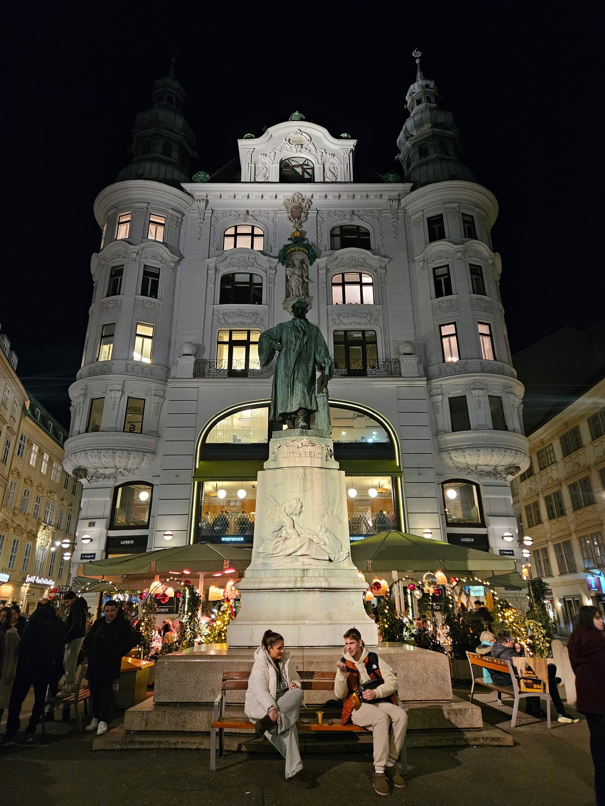
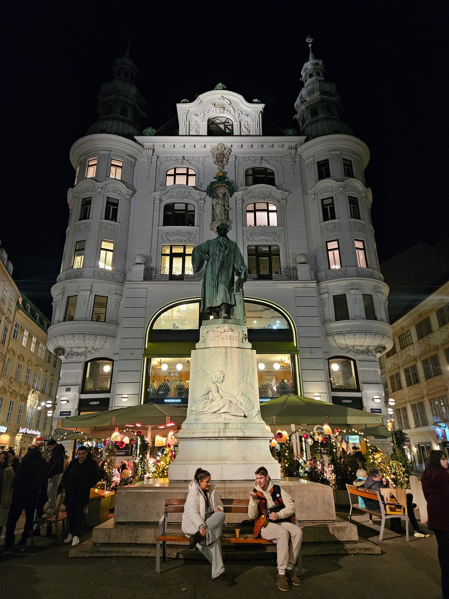
 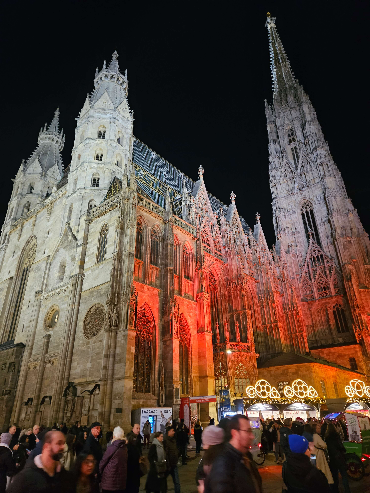
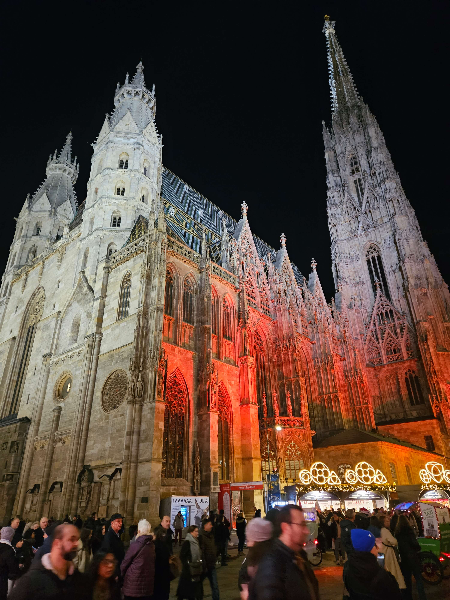


 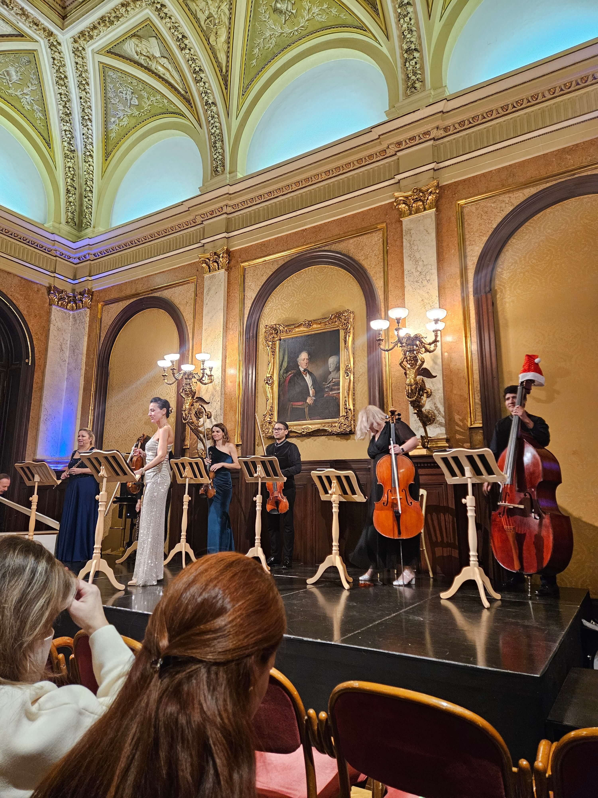
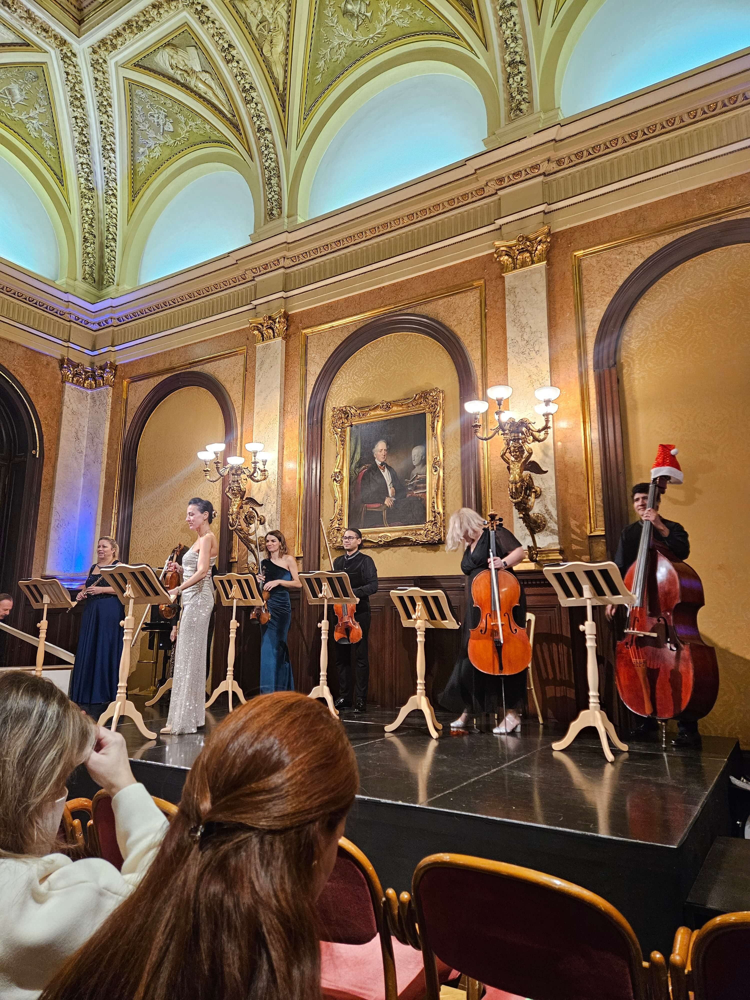
Prag
Prag mimari yapısıyla büyüleyici bir şehir. Orta Çağ mimarisinin gözlerimizi boyadığı bu nadide şehrin sokaklarında dolaşıp sohbet etmek bile ayrı bir keyif. Çarpık kentleşmeye meydan okuyan Prag hangi sokağına giderseniz gidin sizi düzenli ve şaşalı binalarıyla karşılayacaktır. St. Vitus katedrali, Astronomik Saat ve Charles Köprüsü gibi görülmeden geçilmemesi gereken eserlerin yanı sıra Nazım Hikmet’in eserlerini yazdığı Slavia Café sizleri misafir etmek ve kahve eşliğinde dinlenip prag sokaklarına bir süreliğine veda etmeniz için beklemekte.


 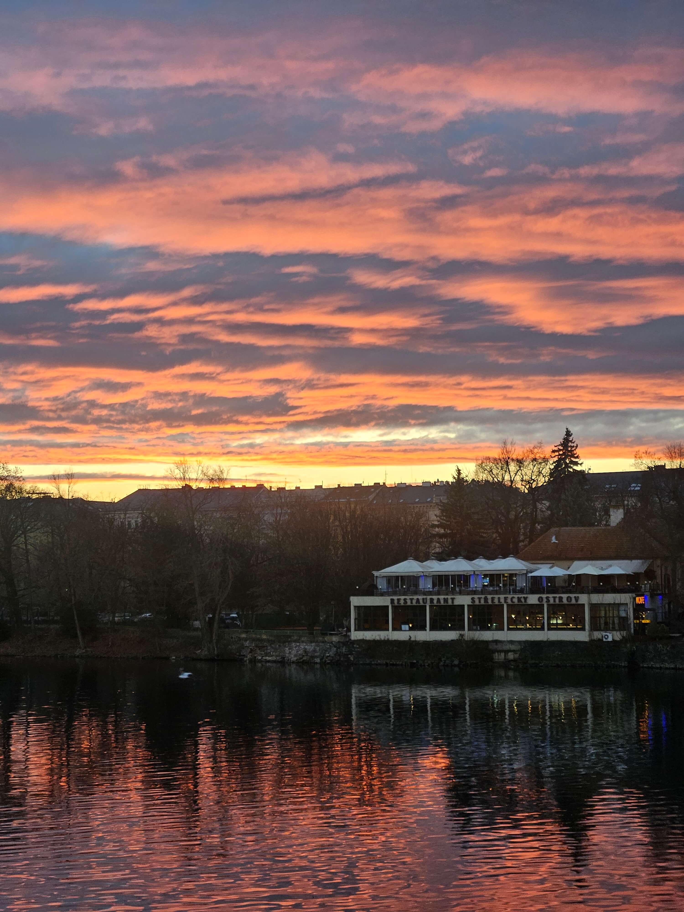
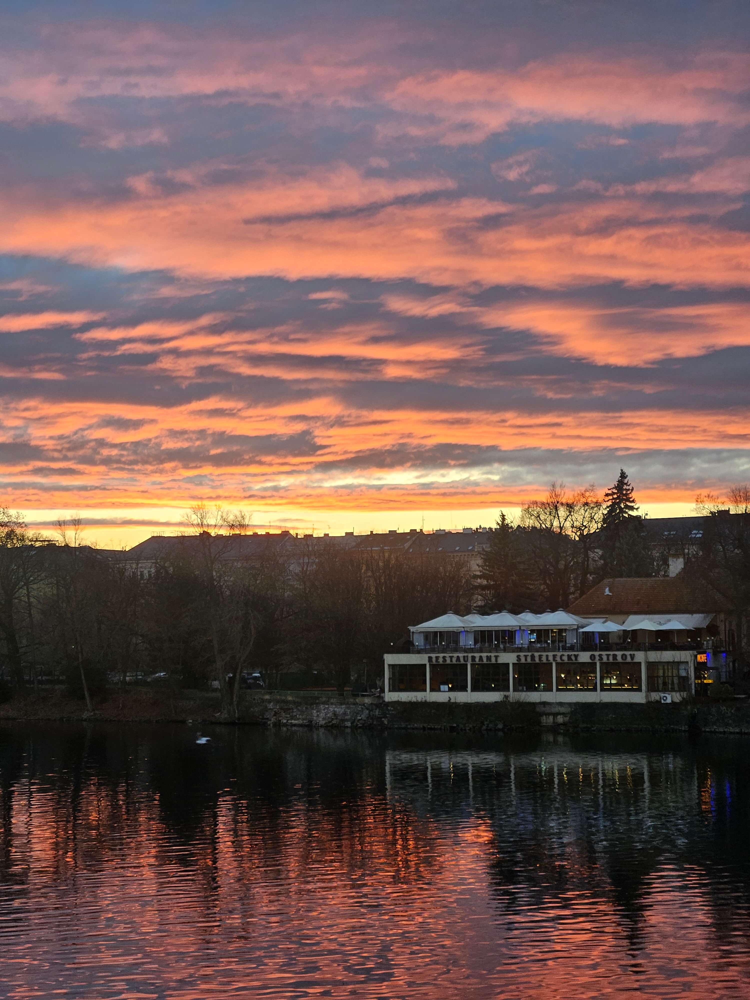
Cesky-krumlov
İnanılması güç surları, kale kulesi ve Vltava Nehri ile Český Krumlov’a hoş geldiniz. Český Krumlov Kalesi ve Vltava Nehri ile hem doğal hem yapay kombinasyonlu bir savunma geliştiren şehre kale şehir desek yanlış olmaz. Manzaraya yukarıdan hâkim olmaya alıştığınız bu şehirde biraz yorulacağınız da aşikar. Buna değip değmeyeceği ise o harika manzarada vakit geçirdikten sonra sizin vermeniz gereken bir karar. 13. yy.dan kalma rengarenk desenleriyle Český Krumlov Kale Kulesi şehre imzalarını atan yapılardan bir diğeri. Prag ve Karlovy Vary benzeri şirin binaları ve atmosferiyle Český Krumlov da ziyaret etmek isteyeceğiniz bir şehir.


 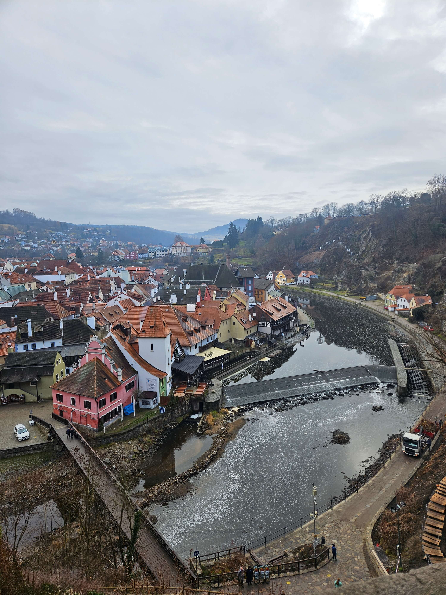
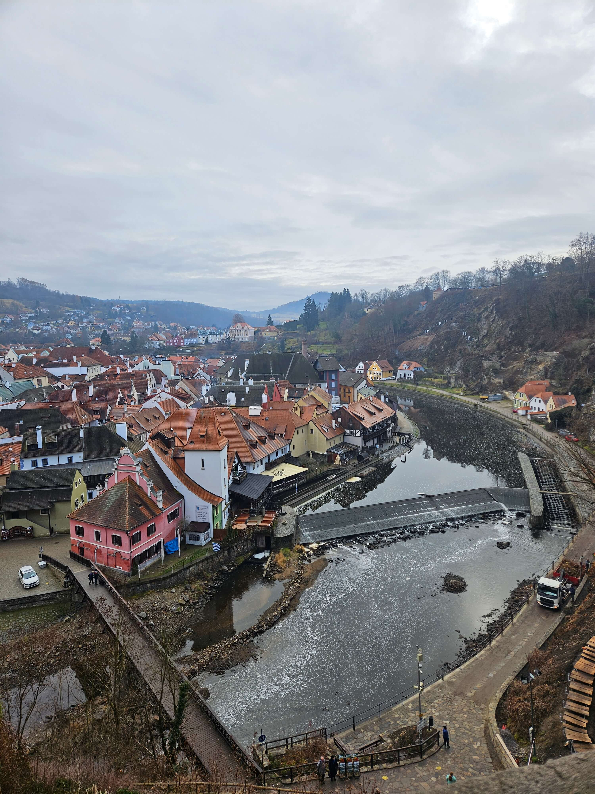
 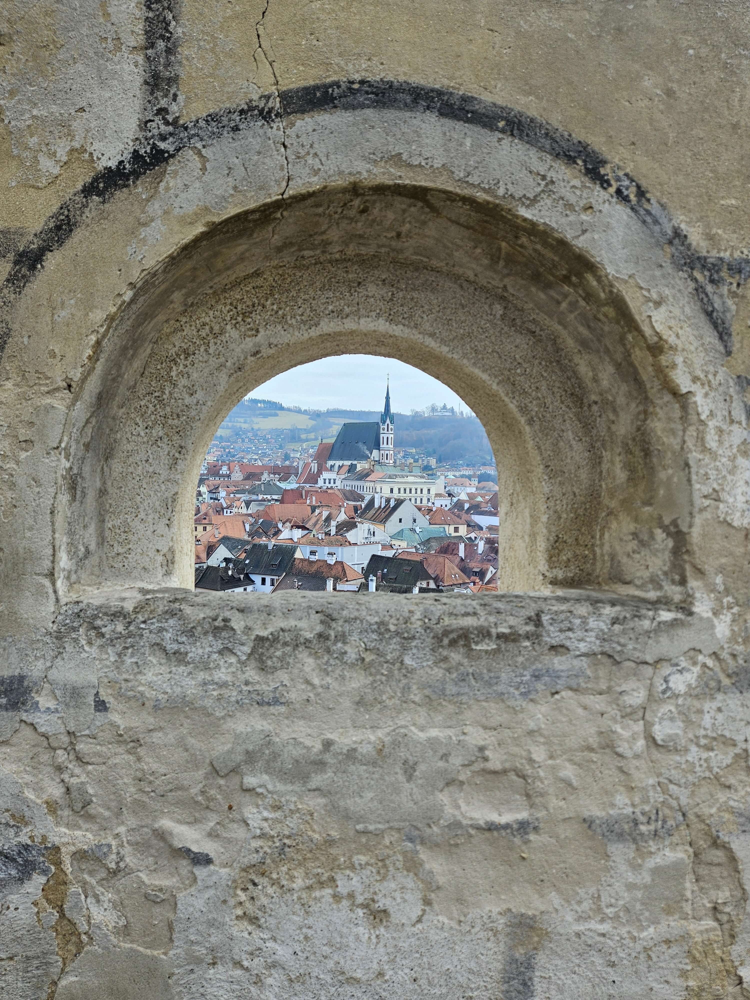
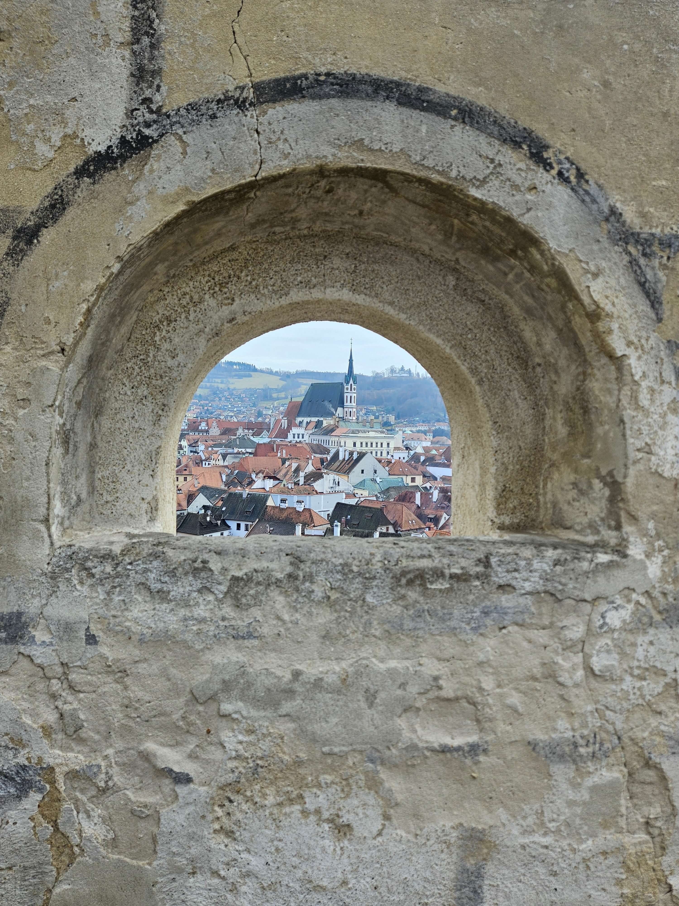
 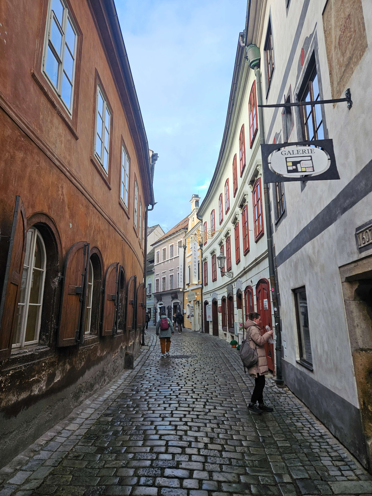
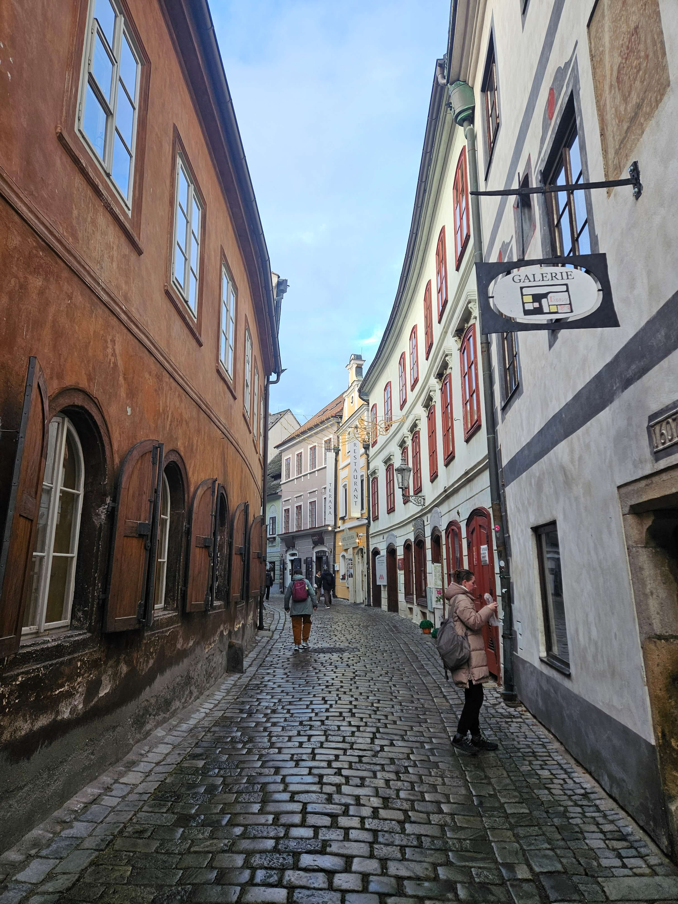
Karlovy-Vary
Mustafa Kemal Atatürk’ün de tedavi amacıyla ziyaret ettiği kaplıcalarıyla ünlü bu küçük şehirde çeşitli sağlık sorunlarının farklı derecelerdeki termal suyu tüketmek suretiyle gerçekleşen tedavi yöntemleri bulunmakta. Spa Cup adı verilen yassı ve sıcak suyun ağzınızı yakmasını önleme amacıyla çaydanlık vari ucu bulunan bardaklardan anı olarak satın alabilir ve termal suyu bu şekilde de tüketebilirsiniz. Başka açılardan şehre bakmaya çalıştığımızda Grandhotel Pupp gözümüze çarpan ilklerden olacaktır muhakkak. Bu otel Johann Wolfgang von Goethe, Johann Sebastian Bach ve Richard Wagner gibi ünlü isimleri ağırlamış olmanın yanı sıra Casino Royale filminde de yer almanın ağırlığını ve gururunu taşımaktadır. Güzel mimarisi, köprüleri ve termal suyuyla Çek Cumhuriyetine geldiyseniz ziyaret etmenizi kibarlıkla öneririm


Budapeşte
Kahramanlık hikayelerini anlatan heykelleriyle görkemli Kahramanlar Meydanı, Buda ve Pest’i bağlayan tarihi Zincir Köprü, Stephen Basilica’sı, Matthias Kilisesi ve her şeyi ayıran tek bir mavi çizgi, Tuna Nehri. İşte Budapeşte farklılıkların birlikteliğine güzel bir örnek. Kışın giderseniz üzerinde kayak yapabileceğiniz Városliget Buz Pisti ile Budapeşte aynı yeri yazın bir gölete dönüştürüyor. 1873 yılında birleşen tepelik ve sakin Buda ile düz ve hareketli Pest günümüzde Budapeşte’yi oluşturmakta. Coğrafi olarak her ne kadar bir olarak kabul ediyorsak da sevgilileri ayıran Tuna Nehri tüm görkemiyle Macaristan Parlamento Binası’nın ayaklarına serilmiş durumda. Tuna Nehrinde dilerseniz akşam vakti tekne turu yaparak parlamento binasının ışıklandırmalarına şahit olabilir isterseniz de gündüz gözüyle şehri seyre dalabilirsiniz. Yeri gelmişken olur da Kahramanlar Meydanında toplanmış bir kalabalık görürseniz resmi karşılama törenlerinin de burada yapıldığını aklınızda bulundurmanız dileğiyle.
 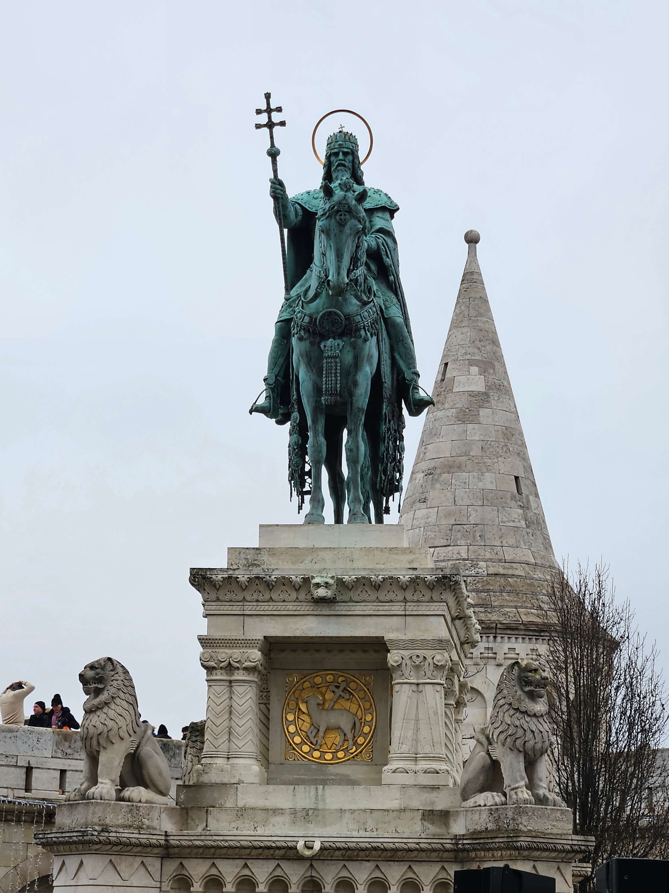
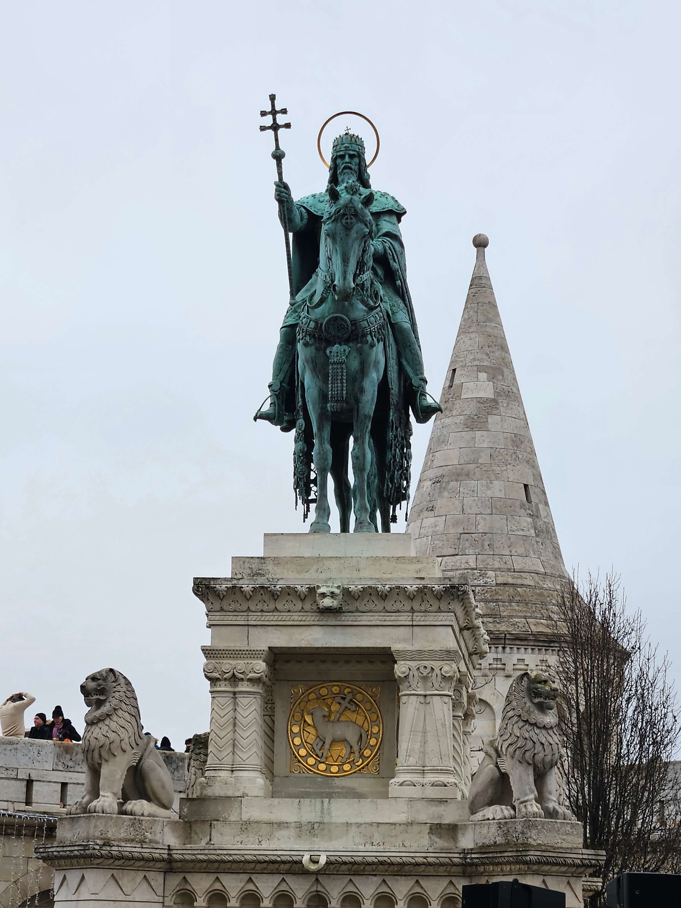


 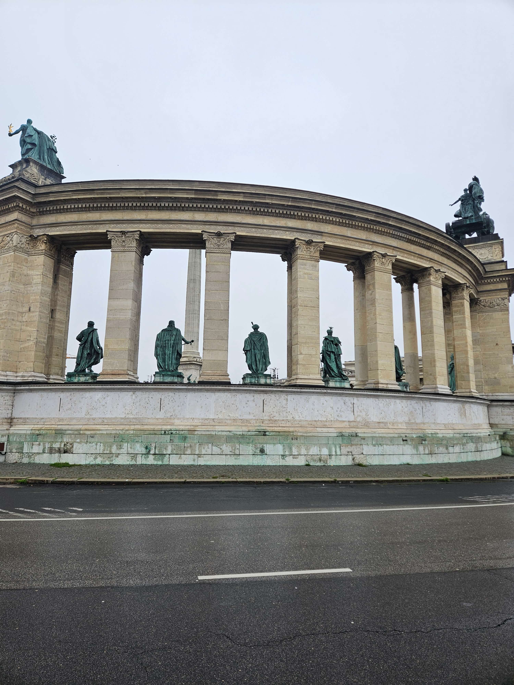
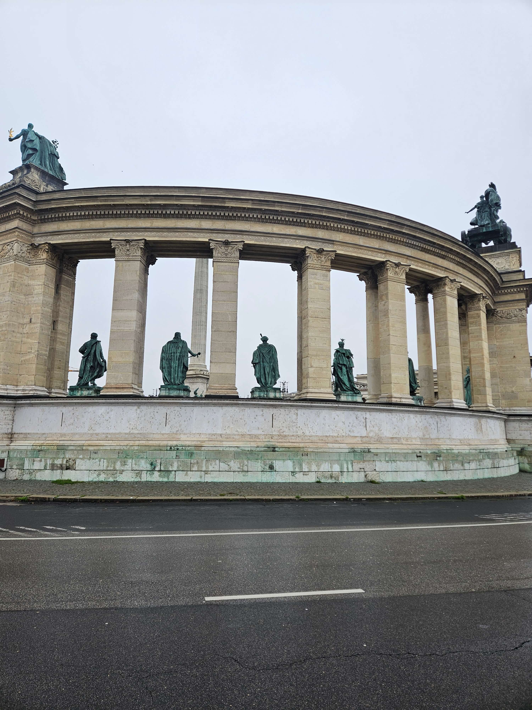

Bratislava
“İşten kaçan işçi”, “Yoldan geçen kadınlara bakan adam”, “şehrin mizahi yüzü” hepsinin tek bir ortak yönü var desem aklınıza ne gelir? Eğer Bratislava’da iseniz işte Cumil Heykeli. Kendisine ne akdar yaklaşırsanız yaklaşın yüzünden gülümsemesi düşmeyen bu heykel şehrin ikonik eserleri arasında fotoğraf çektirmeden geçmemeniz gereken bir durak. Bratislava Kalesi, Slovak Ulusal Tiyatrosu, Blue Church gibi diğer ikonik eserlerin yanı sıra Eski Şehir (Old Town)’ın dar taş sokaklarında renkli binalar eşliğinde keyifli gezintiler yapabilirsiniz. Bratislava’nın merkezi konumunda bulunan yön yıldızına da basıp geçmeden önce bir bakmanızda fayda var. Burası şehrin coğrafi merkezi olmasa da tarihi merkezini sembolize ediyor olabilir ama şu kesin ki şehrin tam kalbinde yer alıyor.

 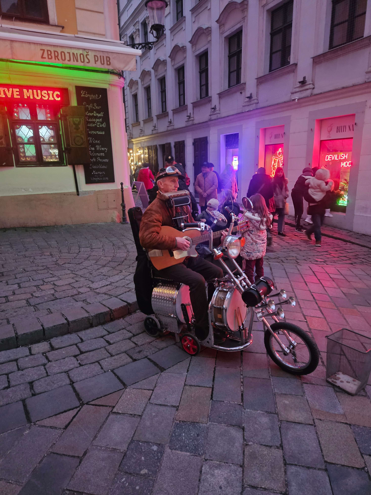
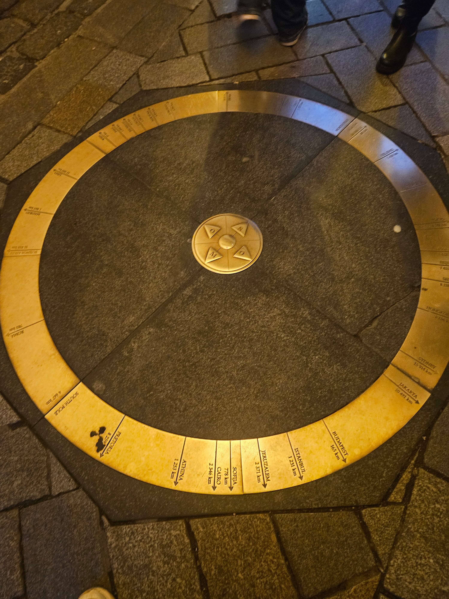
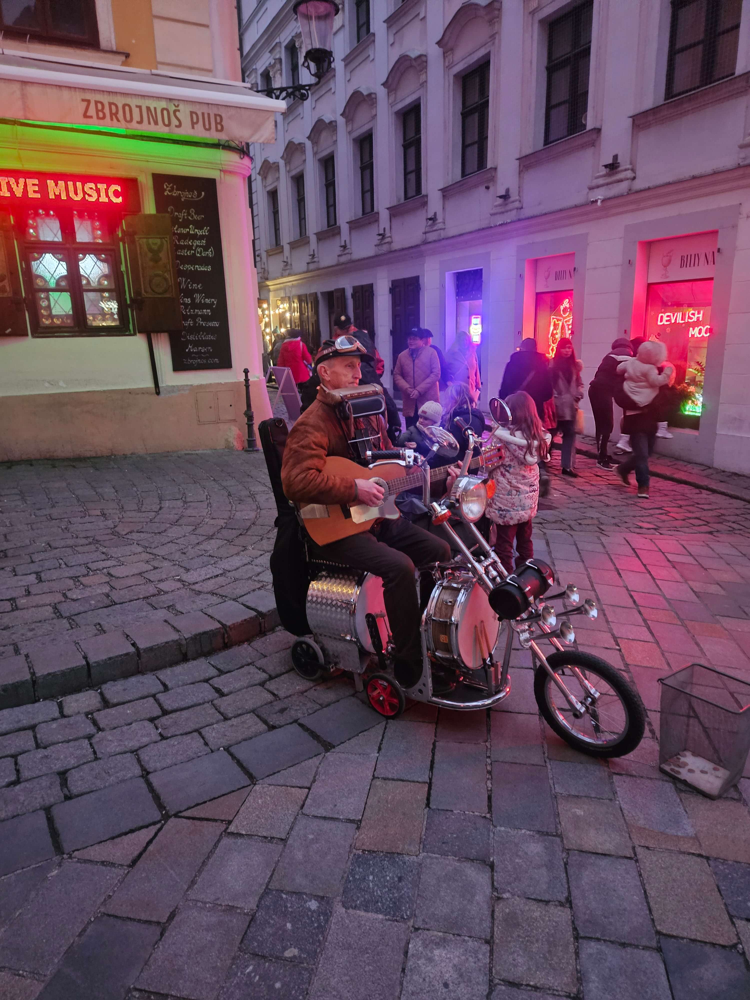
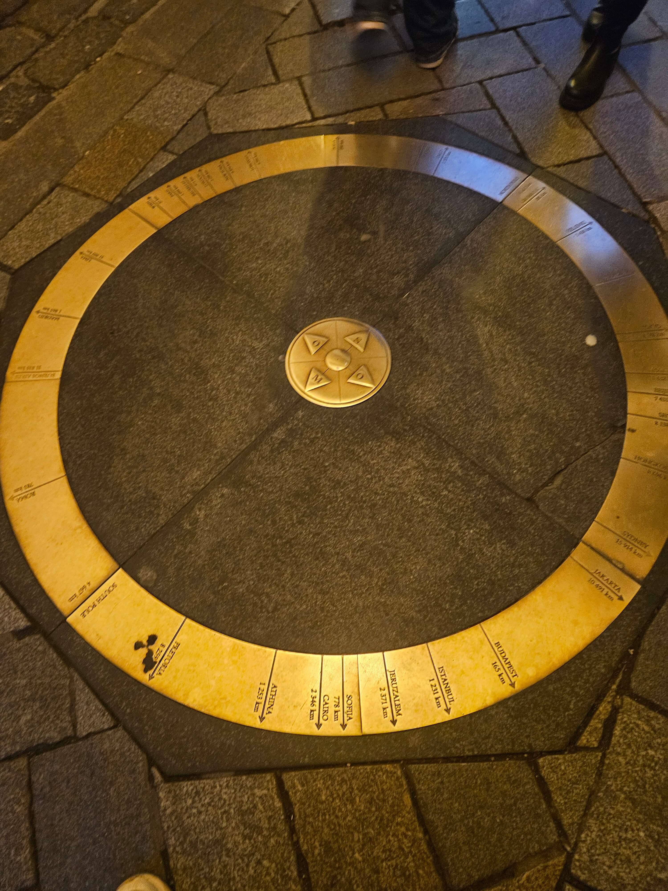